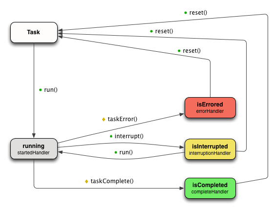

Task Manager is an ActionScript library designed to simplify the implementation of asynchronous processes. This article is an introduction-to (and overview-of) the library.
Before we dive deep on its features let's take a look at some code samples- one written without the Task Manager and the other with. For this example our code needs to listen to a Button for a click event and then load and play a Sound.
At first glance it may seem like there's not a lot of difference between the two controllers above. The sample that uses Task Manager adds some syntactic sugar in place of event handlers but this could be accomplished without Task Manager if we were willing to write a custom model. Code pertaining to Sound loading and playback has been abstracted away from our specific controller into a more reusable format. This improvement is also something that we could accomplish without the use of the Task Manager library. Let's take the example a little further though. What if we wanted to log an event to a server indicating the beginning and end of the Sound playback? Let's take another look at our two controllers:
Now our Task Manager based implementation looks a lot smaller than the alternative thanks to the use of CompositeTask. As the name suggests, CompositeTask is a task comprised of other tasks. These other tasks can be run in parallel or in serial; (in this example they are run in serial). In the non-Task Manager implementation above we are forced to handle errors dispatched from both Sound and URLLoader objects, but in the second example we only listen for an error on the CompositeTask. This is because the CompositeTask bucket brigades any errors dispatched by its children. This results in controller code that is better organized and more readable.
Let's take this example one step further. Assume that we are writing this code for a mobile platform and our controller needs to be able to handle external interruptions.
At this point the Task Manager implementation is beginning to show several clear advantages:
As a program's complexity increases so do the advantages to using a component like Task Manager. Let's take our example one step further and introduce a few more of Task Manager's built-in components along the way. Let's modify our program to:
For simplicity's sake in this example, let's assume our animation is defined by one of the Flex effects classes.
At this point our first implementation is beginning to get brittle. It meets the requirements but it does so by spreading state across the controller in a way that is not very reusable or adaptable. On the other hand, the Task Manager implementation is still tidy; each operation is abstracted away into its own Task and the flow could very easily be re-arranged if requirements change.
To implement the dependencies introduced by the latest round of requirements we made use of an additional Task Manager component: EventHandlingTask. EventHandlingTask listens for 2 categories of events- success/completion and failure/error. If a completion event type is dispatched EventHandlingTask will complete itself. If an error type is dispatched it will error. In our case we are only concerned with a single event type, EffectEvent.EFFECT_END, so we do not need to provide any error types.
Alternately, we could have achieved this same result using the TaskManager class (see below). TaskManager is a composite task capable of handling complex task dependencies. It can be configured to execute an arbitrary sequence of child tasks. Each of its children can have dependencies on other children. TaskManager coordinates the execution of its children to ensure that no single child gets executed until all of the Tasks it depends on have completed. Like CompositeTask, TaskManager will bucket-brigade any Task-errors so that we only need listen to it for completion or error. Furthermore interrupting TaskManager will automatically interrupt any of its children that are running (and subsequent calls to its run() method will automatically resume any interrupted children).
Before we go any further let's take a quick look at the lifecycle of a Task. Tasks have 5 basic states. When a Task is first created it's in the default state. From this state a task may enter a running state. From there it may enter an errored state or a completed state. (Some tasks may also enter an interrupted state but we'll talk more about that later.) As a task changes state it notifies external code by dispatching a TaskEvent. Closures may be used in place of Events if you prefer.

Tasks can be synchronous or asynchronous. Synchronous tasks complete their work immediately (before returning control to the caller). Asynchronous tasks take an indeterminate amount of time to complete. Some tasks that are asynchronous are also interruptible- meaning that it is safe to pause and resume them.
Task behavior is represented by 3 interfaces:
In addition to dispatching events a Task also exposes several properties that can be used to determine which state it is currently in. These include: isComplete, isErrored, isInterrupted, and running.
In addition to the types of tasks we've already seen, there are several other reusable tasks provided by Task Manager. Let's take a brief look at a couple of them and discuss some of their potential uses.
The FactoryTask is typically used within a larger composite task. It serves as as placeholder in the event that we do not yet know which type of task to create or when the task creation relies on an object that has not yet been initialized. For example:
In this example we define a sequence of tasks that loads external XML data and then performs some operations based on a value defined within the loaded XML. At the time our program is defining this sequence we do not yet know which operations we will need to perform and so we use a FactoryTask. The FactoryTask constructor accepts a closer that returns an object of type Task. When the FactoryTask is executed it invokes this function and then runs the task returned. When this newly-created task finishes or fails the FactoryTask bubbles the behavior by finishing or failing itself.
The ObserverTask can be used to monitor a set of tasks and record their completion. Tasks can be added to or removed from the observer at runtime. It can be useful when an application needs to monitor a queue of tasks for completion. It is particularly helpful in the case of task interruptions. Tasks can be interrupted and resumed manually (using the interrupt() and run() methods). They can also be interrupted for other tasks. In that event the task that is being interrupted listens to the interrupting task for completion and then automatically resumes itself.
Let's look at an example:
The above example shows an ObserverTask being used to interrupt URL request while a sound is played and the application sleeps for 500ms. Once both the sound has finished playing and 500ms have passed- the ObserverTask will dispatch a complete event and the URL request will resume where it was interrupted.
The PlaySoundTask can be used to play a sound and notify of its completion. This tasks supports interruptibility- meaning that sound playback can be paused and resumed.
The RetryOnFailureDecoratorTask is a special decorator task. It can be used to decorate other tasks and retry them in the event of a failure. (This can be useful for Tasks that rely on an internet connection in order to complete.) This task allows its decorated Task to fail a couple of times before bubbling the error.
SleepTask can be useful when a place holder of indeterminate time is required within a composite task. A SleepTask will never complete unless manually instructed to by external code. For example if our application needs to display a EULA and wait for the user to click "accept" before proceeding, we could use a SleepTask.
StubTask is primarily intended for automated tests but can also be useful in factory situations when a default behavior of nothing is desired. StubTasks do not do anything on their own. They can be configured to complete immediately upon execution or to wait for external code to instruct them to complete. For example:
In the above example the parent class uses a StubTask as a placeholder to be executed in the event of a button-click. By default, no action will be taken if the user clicks the button; the StubTask will complete synchronously and the button will be re-enabled. A sub-class can override this factory method though if it wishes to perform any specific actions.
Several reusable tasks are included within the Task Manager library. Even so your program will likely require additional tasks for custom operations. You can extend Task to define your own custom tasks (as described in a later section of this tutorial) but sometimes that can be too heavyweight, especially in the case of synchronous tasks that do not need to support interruptibility. In those cases the TaskWithClosure task can be useful. For example:
The above example illustrates a simple, synchronous custom task created with the TaskWithClosure method. The code defined within the closure passed to the task will not be executed until the task itself is executed. Within our example this means that a sound will first be played, then our custom code will be executed, then another sound will play.
The URLRequestTask loads a URLRequest and exposes any loaded data upon complete. This task-type handles all of the various error event types dispatched by a URLLoader.
WaitTask can be used to delay a composite task for a predetermined amount of time. For example:
The above composite task plays a sound and then delays for half a second before playing another one.
We've already discussed CompositeTask at a high level but it is such a useful reusable task that it warrants a closer look.
Sometimes it is useful to perform a small, synchronous operation within a sequence of tasks. The TaskWithClosure could be used for this purpose but CompositeTask also exposes a convenience method to make things even easier: addFunction.
The above code will execute our synchronous function in between two asynchronous tasks.
All of the CompositeTask examples we've looked at so far have been configured before being run, but a composite's sequence can also be modified while it's running. For example:
The above example shows a sequence of tasks that can be modified under certain conditions based on user input. The syntax for this is pretty straight forward but there is one potential pitfall worth pointing out. The task we are removing happens to be the last task within the sequence we've defined. Because of this the CompositeTask may consider itself completed once that task has been removed. To prevent that we add the new task before removing the preexisting task. An alternative approach would be to interrupt the composite before making our adjustments.
It is worth pointing out that for some types of dynamic composites a FactoryTask may be simpler and easier to use. This is true if the only things changing within the composite are the types of individual tasks being run. If the overall sequence is being modified however, as in this example, using addTask() and removeTask() is the way to go.
Sometimes it is useful to bundle a sequence of tasks for reuse rather than defining the same composite in multiple places. CompositeTask can be subclassed in this event:
As the above example shows, all that's required to create a reusable composite is to extend CompositeTask and override the addTasksBeforeRun() method. This method will only be invoked the first time the sequence is run; it will not be executed again if the composite is interrupted and re-run.
If your composite needs to support (or enforce) interruptibility you should use the InterruptibleCompositeTask. It only works with tasks that are either interruptible or synchronous. Interrupting or resuming a composite task will automatically interrupt or resume all children.
So far we have taken a look at Tasks that are included with the Task Manager library, but how complicated would it be if we wanted to create our own Task?
The first question we should ask ourselves is: should this new Task handle interruptions? At a high level there are 2 types of tasks: those that can be interrupted/resumed and those that cannot. How do you decide which type to create? Perhaps you know ahead of time that your application needs to be interruptible. If so then your choice is an easy one. Even if your application does not have such a requirement it may still be worth considering supporting interruptibility. A little more work is involved in implementing that functionality initially but your code will be in a better state if requirements should change.
To create a basic task all you need to do is extend extend the Task base class and override the customRun method. Once the task completes your code should execute the taskComplete method helper method. (If your task should error the taskError method should be called instead.) These helper methods will update internal task state and dispatch the appropriate state-change events.
If you want your task to support interruptibility you should extend the InterruptibleTask base class instead. You'll need to override both the customRun and customInterrupt methods.
You may also choose to create a synchronous task by extending the SynchronousTask base class and overriding its customRun method.
Let's create one of each of the above Task-types to show how it's done. For this example we'll create a task that changes a numeric property of an object from one value to another. Our asynchronous implementations will gradually change this value over a period of time.
As you can see there is not a lot more involved in supporting interruptibility within a custom task- a few more lines of code and a little thought into how to gracefully stop and resume your operation and you're there. In terms of reusability interruptible tasks are the way to go because they can be used both in contexts that require interruptibility as well as those that do not.
A task is any operation that can be started at one point in time and will later complete or error. Completion or failure of a task is signaled by the dispatch of a TaskEvent (either TaskEvent.COMPLETE or TaskEvent.ERROR). This means that we can listen to a Task using regular ActionScript event handlers:
The above example should look familiar to Flash developers. There are times when event handlers feel too heavy-weight to accomplish simple operations. For this purpose the Task Manager library supports closures for notification of task state-changes. The above code could be re-written as follows:
The only advantage to using closures over event handlers is that it requires fewer lines of code by eliminating the need to manage event-listener cleanup.
Closures may be attached to tasks using the following methods: withStartedHandler, withInterruptionHandler, withErrorHandler, and withCompleteHandler.
Closures must have one of the following signatures:
Like event handlers, multiple closures can be attached to a single task (although their order of execution is not guaranteed).
Task types like CompositeTask and TaskManager are intended for use in production code due to their flexibility and robustness. For simple scripting operations however it can sometimes be easier to chain tasks together manually. The Task Manager library offers a couple of convenience methods for doing this. Let's take a look at a few (admittedly contrived) examples to illustrate these methods:
The and() method executes multiple tasks in parallel:
The then() method executes multiple tasks in sequence:
The or() method executes a fallback task in the event that the primary task fails:
This article previously asserted that the benefit of using the Task Manager library is greater the larger and more complex a system gets. This assertion presumes that the Task Manager framework is being used throughout the system, but what does that mean? Taken to an extreme it could mean that the entire application is a single, large composite task. For example:
The sample above shows what a mobile application could look like if the entirety of its application code resided within a composite task, MyApplicationTask. One of the advantages to this approach is illustrated by the application's handling of lost internet connectivity. If connectivity is lost the entire application is paused; the application is then resumed when connectivity is restored.
Building on top of the Task Manager library you could create such an application from scratch. It may be better to use the App Skeleton framework for this purpose though. It offers the same application interruptibility as well as many shared initialization tasks. It is also structured in such a way as to encourage application design that is easily programmatically testable.
The Task Manager library uses the mx.logging.ILogger to print debug information to the console. Apps can easily control what level of debug information they want to receive using the TraceTarget component.
For example, to log all levels of information along with time, category, and a low-level label use the following TraceTarget configuration:
Each Task is automatically assigned a unique, numeric instance identifier. It can be difficult to debug within a context of multiple, nested tasks using these identifiers alone however. Tasks support an additional attribute- taskIdentifier- for this purpose. It is recommended that you assign a human-readable identifier to every task you create to help in the event that debugging is required. For example:
Both of the above tasks have been assigned task identifiers. If either task should error a log message in the following format will be printed to the console:
11/6/2012 09:46:11.984 [ERROR] com.rosettastone.library.taskmanager.URLRequestTask Task errored [id: 305, taskIdentifier: "Loads app XML"] at 31717 ms
The id above is a unique instance id. The task identifier is also included (if we've provided one) to assist in locating the offending task.